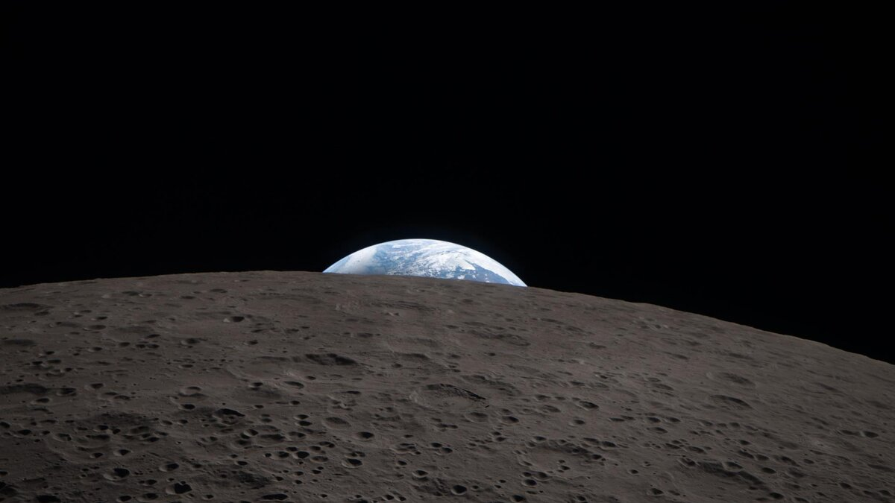

ARTEMIS PROGRAM · MISSION 2 OF 5
ARTEMIS II
Mission Complete
MISSION ELAPSED TIME
T+
09
DAYS
01
HRS
32
MIN
15
SEC
Launched April 1, 2026 • 22:35 UTC · LC-39B, Kennedy Space Center
CURRENT PHASE
Splashdown
Orion splashed down in the Pacific Ocean off San Diego. USS San Diego and recovery teams retrieved the crew. Mission elapsed time: ~9 days.
MISSION PROGRESS
Splashdown
LATEST UPDATES
See all ›
—
DISTANCE
—
VELOCITY
Splashdown
PHASE
SPACE WEATHER: ELEVATED RISK
Kp: 0 · CMEs: 31 · Peak Flare: M-class
CREW
All crew ›

Wiseman
CDR

Glover
PLT

Koch
MS

Hansen
MS